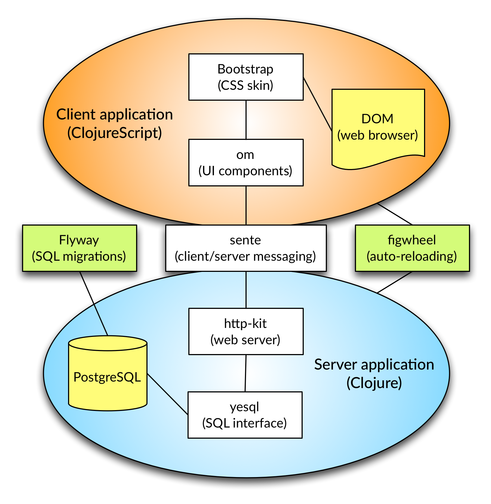

Web Applications
by Example
Client, Server, Development
Steffen Beyer
:clojureD 2015, Berlin
Outline
- Motivation
- Application: ClojExCMS
- Development environment: Light Table
- Server-side implementation
- Client-side implementation
- Conclusion
Motivation
- Software development should be fun
- Bret Victor
- Evaluation of tools and libraries
- General purpose frontend/backend template
- Easily comprehensible example
Application architecture
(in terms of libraries and building blocks)

Lines of Code
| Language |
files |
blank |
comment |
code |
| ClojureScript |
10 |
38 |
2 |
325 |
| Clojure |
8 |
36 |
7 |
190 |
| SQL |
8 |
26 |
10 |
71 |
| HTML |
1 |
1 |
0 |
19 |
| Total |
27 |
101 |
19 |
605 |
Conclusion
- ClojureScript feels mature
- Libraries feel powerful
- Light Table feels beta
- ClojExCMS surely has issues
- (End-to-end) tests
- Documentation of data structures
- Pull-requests welcome!